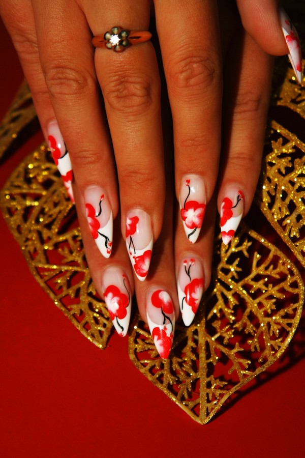
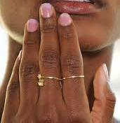
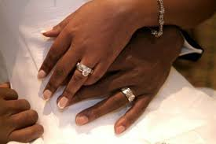
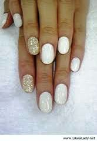

|
Wedding Nails Design




Wedding nails should be on top of your list if you want it to be perfect on your wedding day.
Every girl dreams of marrying his dream boy.
During this special day, she wants everything to be perfect, from her wedding gown, wedding jewelry, rings, catering, venue and everything else.
However, most often nail art in not given major priority. But nowadays, wedding nails are becoming a necessary part of every girl is wedding.
On your wedding day, everyone will notice you from head to toe.
That is why, during this important day of your life, be sure to beautify your hands.
Wedding nails are not only for the bride but also for the bridesmaid or even the wedding guests.
Here, we will give you different stunning designs for your wedding nails.
These designs are very attractive and classic as well. Enjoy!
|